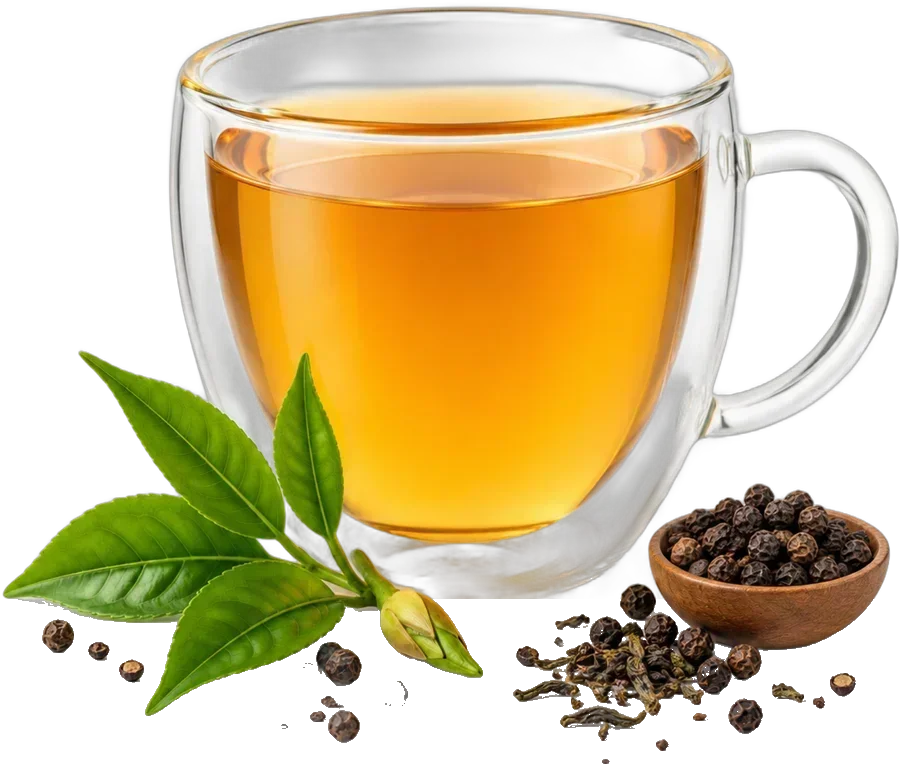
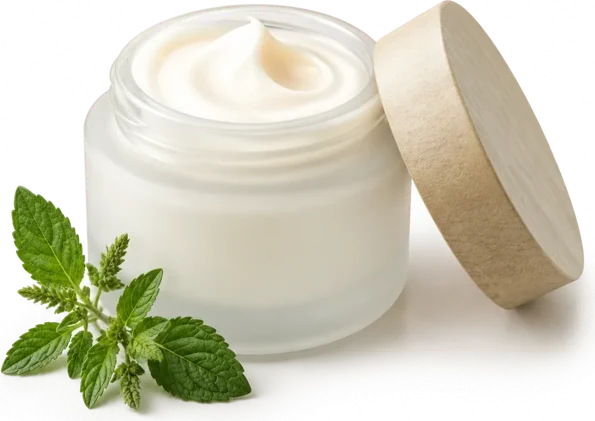
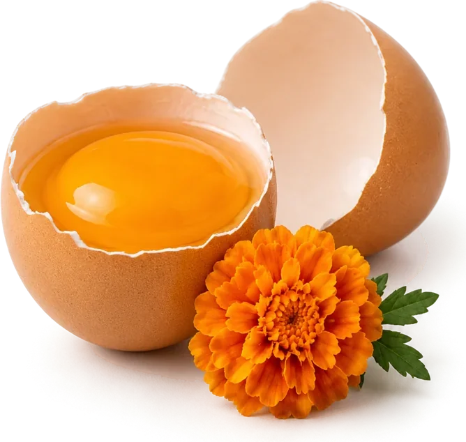
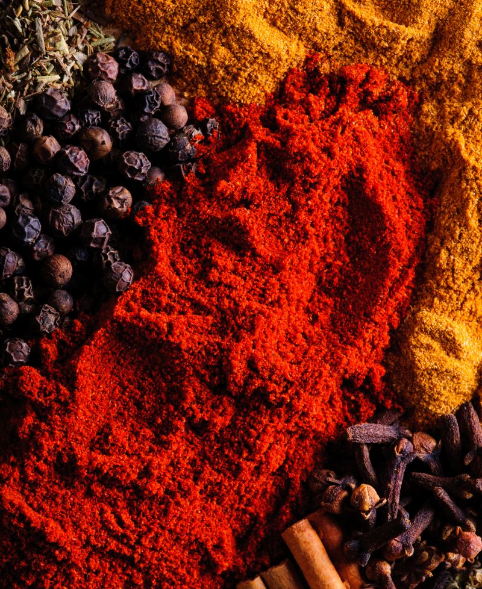
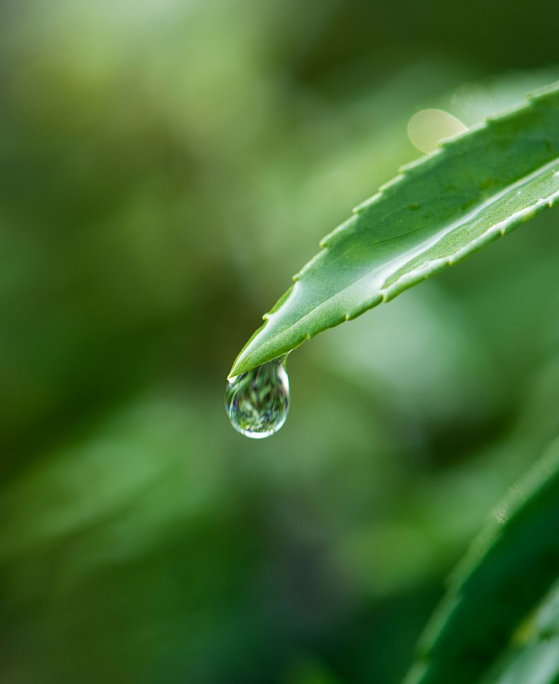
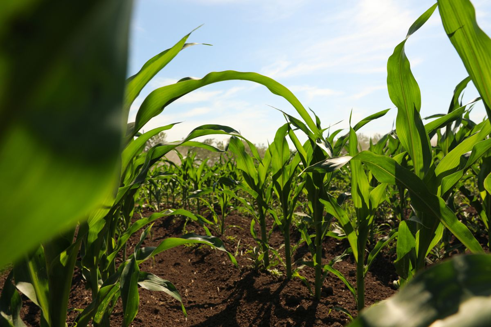
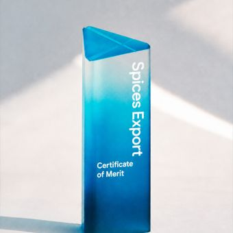

A.V. Thomas Group
Founded 19259
manufacturing facilities
7
continents reached
5
countries with offices: USA, Mexico, UK, UAE and India
of agriculture, since the group's plantation founding
contract farmers working with us each year
of raw material collected a year
countries served
01 / By application
The same botanical serves a seasoning plant, a feed mill and a skincare formulator in different ways. Each industry gets its own specification, documentation and application support.

Natural colours, spice extracts, antioxidants and flavours for food makers, and tea solutions for beverage brands.

Botanical actives and extracts for skin, hair and fragrance formulations.

Natural pigments and feed solutions that hold up in real feed-mill conditions, for poultry, swine and pets.
02 / By ingredient
Standardised natural colours, carotenoids, spice extracts, essential oils and tea extracts, made for consistent performance batch after batch.
Lutein and zeaxanthin from marigold we breed, grow with contract farmers and extract ourselves, for feed pigmentation and human nutrition.
Learn more →
Concentrated colour and flavour from paprika, capsicum, turmeric and the full spice range, for clean-label food.
Learn more →
Aromatic oils distilled from spices and herbs, for flavour, fragrance and personal care.
Learn more →Instant and decaffeinated tea, natural tea caffeine and nutraceutical extracts such as green tea polyphenols.
Learn more →
03 / The difference
Sourcing a botanical in commercial quantity is harder than extracting it. We breed for it, so the plant arrives with the yield and active content the extract needs.
We contract farmers directly, with agronomy support and buy-back, so traceability starts at the field.
Growing across regions spreads weather risk, so one bad season does not stop supply.
Hybrid seed developed for higher active content, resilience and yield, which also raises farmer income.
Seed-to-extract integration covers marigold and tea.
04 / Scale and reach
AVT Natural is part of the A.V. Thomas Group. The group gives stability; our own operating figures show whether we can fill the order.
manufacturing facilities
continents reached
countries with offices: USA, Mexico, UK, UAE and India
plants: Vazhakulam, Kerala · Tiptur, Karnataka · Sathyamangalam, Tamil Nadu
raw material collected a year
finished extracts a year
Group and AVT Natural figures are reported separately.
05 / From seed to specification
Control at every stage is what makes a specification repeatable. Scroll through the process, or pick a step.
Seed research, contract farming and agronomy support across multiple agro-climatic zones.
06 / How we work with you
They arrive as a problem: a colour that fades, a heat note that's too sharp, a label that has to be clean. We work from there.
Send a current ingredient or a target profile. We match it from our range or tell you what it would take.
Start a match →New extracts and standardisations built with your R&D team, from bench sample to commercial batch.
Brief our lab →Oil, water-soluble, powder or emulsion, at the strength and carrier your process needs.
See formats →Use our extraction plants and quality systems to produce to your own specification.
Discuss capacity →07 / Proof
Seed research, contract farming, drying and extraction under one roof, giving buyers traceable lutein from a single accountable supplier.
Read the case study →Heat without the red, for sauces and seasonings where colour has to stay neutral.
See the specification →The market
Demand for natural ingredients is reshaping food, feed and personal care, and buyers need suppliers who can scale botanicals without losing consistency.
08 / Quality and compliance
Your QA team will ask four questions before your R&D team gets to try a sample. Here are the answers.
In-house analytics on every batch, against your specification and ours.
Samples from each batch are kept and available for later analysis.
Microbial testing is completed before anything ships.
Typical analytical turnaround for customer queries and custom tests.
Recognition and excellence

For outstanding performance in exporting spices and spice products.
Awarded to the Cochin plant, second among medium industries.
Recognition for sustainable agriculture.
Recognition for food safety.
09 / Responsibility
Responsibility is built into the supply chain, not added at the end: water recycled on site, carbon data verified to ISO 14064 and 14067, and farmer livelihoods tracked alongside yield.
rainwater harvested a year
zero liquid discharge at our extraction plants
verified carbon inventory and product footprint
Start a conversation
Samples, specifications and technical documentation, straight from the team that makes them.